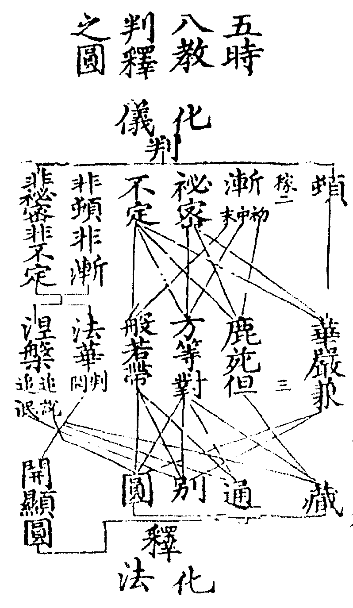
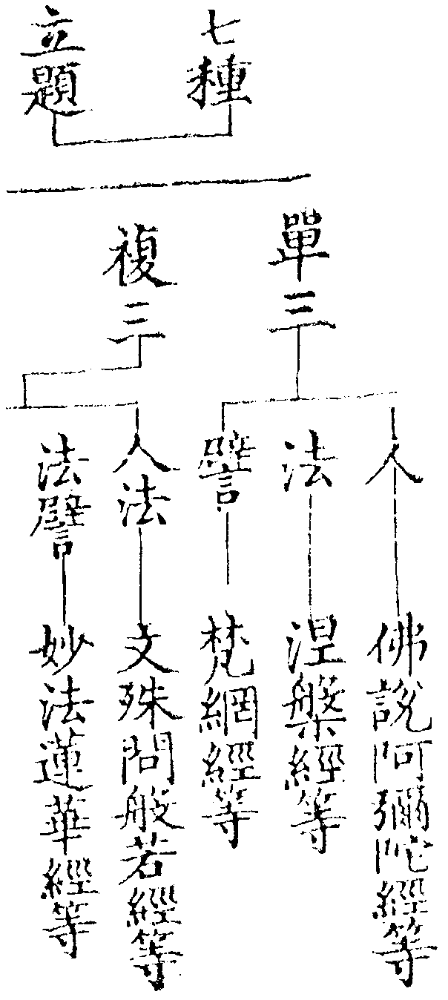
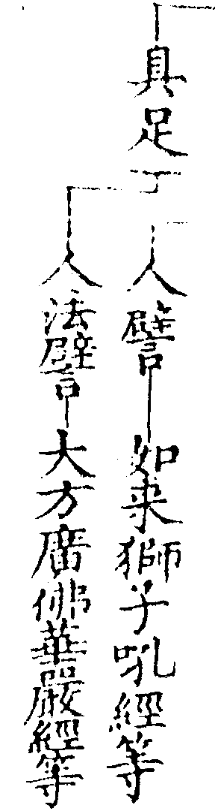
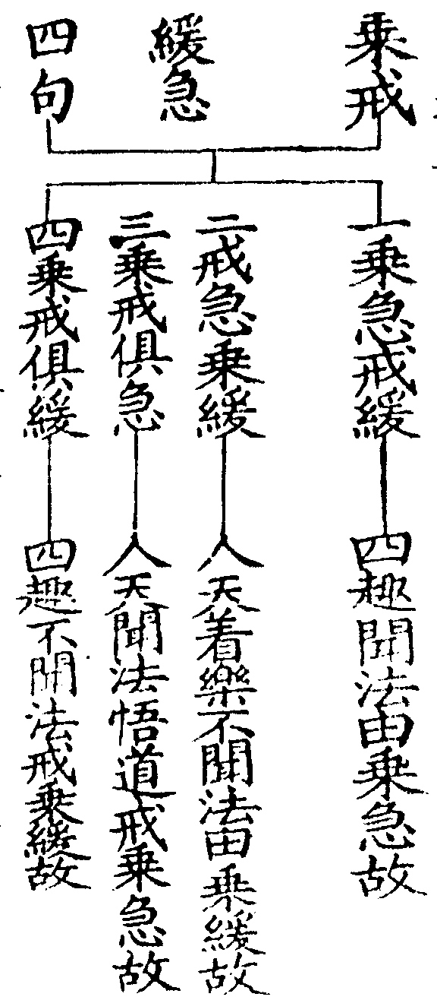
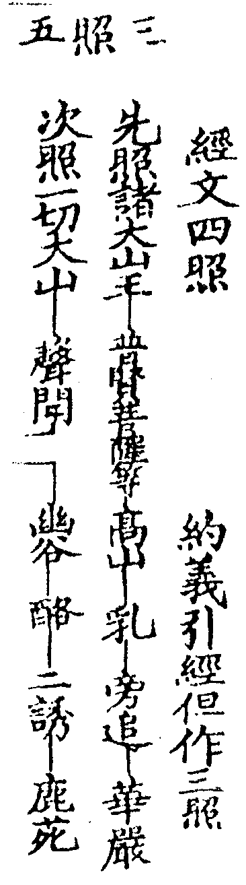
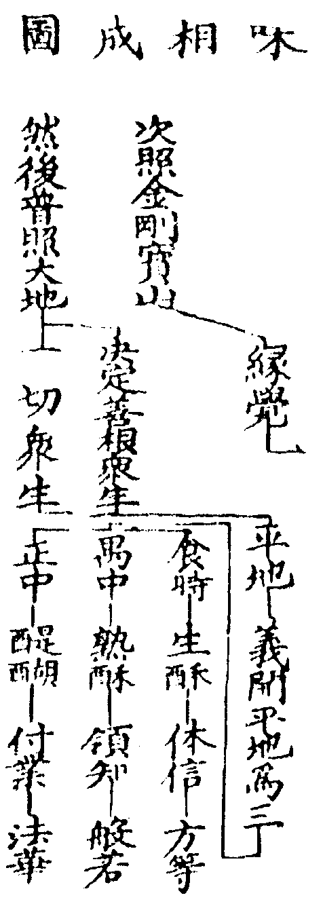
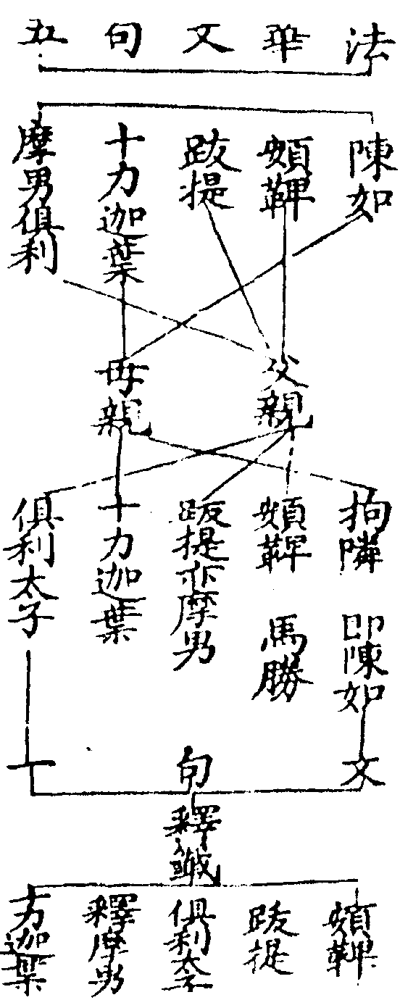
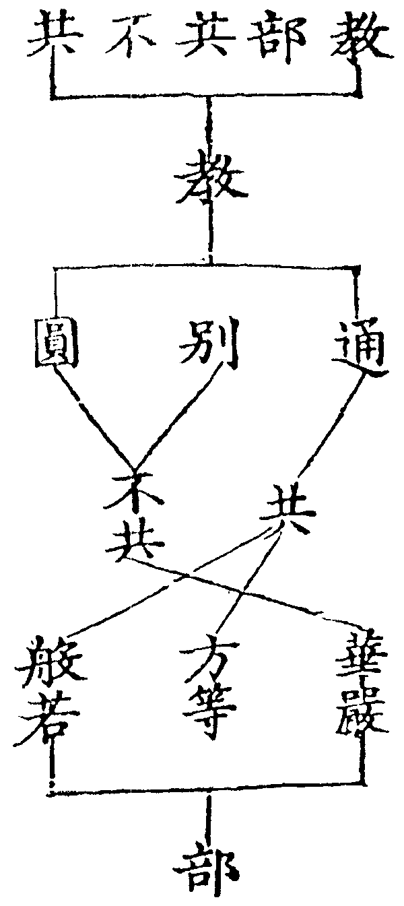

永樂北藏 第189冊
No.1629 天台四教儀集註（選錄「集註」本文） (9卷)
【宋 諦觀注】
第 2 卷
天台四教儀集註卷第二 稼二
天台四教儀
天台山名也天者顛也元氣未分混而為一兩儀既判清而為天濁而為地此本俗名且依俗釋台者星名也其地分野應天三台故以名焉如輔行(一上十七)此山即大師棲身入寂之所盖以西方風俗稱名為尊此土避名為敬故以此處顯其人也復以人命家則天台為宗矣今題意在焉四教者別文明化儀化法有乎八教今但言四教者以通名立題義攝兩種蓋非化儀無以判非化法無以釋一書之旨莫越於斯教者聖人被下之言亦詮理化物為義問或約化儀立題乃據籤文化儀四教文義整足任運攝得三藏等四為證或謂頒宣藏等以為頓等謂化儀無体又謂頓等四教古師亦用藏等四教起自天台以此為化法立題今何以從通名耶荅化儀化法有体無体或彼此相攝文各有意皆不為此立題而設况古師所立頓等與今不同故妙樂以頓等藏等為天台一家判釋之綱目今此一書既明判釋立題四教豈偏屬乎儀者天台一家四教判釋儀式也文末既云自從此下畧明諸家判教儀式顯今一書明判明釋在乎天台豈可謂如來施化次第儀式邪。
高麗沙門
諦觀錄高麗東夷國名沙門此云勤息謂勤行眾善止息諸惡故又沙門復以釋為姓者始於晉安法師也後增一阿合來此土云四河入海同一醎味四姓出家皆名為釋(文)顯性錄以四句棟云一是沙門非釋子出家外道二是釋子非沙門在家釋種(此王種之釋也)三是釋子是沙門兩土之僧(此四姓出家通稱為釋)四非釋子非沙門兩土之俗四句揀之無遺矣或謂是釋子是沙門乃釋種出家且梵土餘種出家及此土之僧皆稱沙門釋子為何句收耶錄謂觀師抄錄台教綱要也。
天台智者大師
拾遺記云天台棲真之處智者隋主所稱大師羣生模範亦帝王大臣所師也。
以五時八教判釋東流一代聖教罄無不盡。
五時八教本是如來所說之法大師依義立名用此判釋一代聖教故云以也然上天台智者乃能判能釋之人東流聖教乃所判所釋之法五時八教乃判釋之儀式也蓋天台凖法華意判釋諸經如籤文云判釋凖乎部教部教之義唯在法華判謂剖判釋謂解釋妙樂云頓等是此宗判教之大網藏等是一家釋義之綱目如以化儀判華嚴為頓以化法別圓解釋乃至判法華為非頓非漸以純圓獨妙解釋。

東流者佛法自西而流東也代者更也如來五十年說法為一代今以五時八教判釋無遺若爾妙玄何云柰苑之前不預小攝耶須知妙玄約時破古謂說提謂經時乃未轉法輪已前未有僧寶故破古師不應於鹿苑前別立提謂為人天小教若約法[(冰-水+〡)*ㄆ]經則如四教義云三藏明世間布施持戒禪定即是人天之教並正因緣所生善法此已為三藏所攝故先達云約時破古不當五時所收約法收經義當三藏所攝也。
言五時者一華嚴時。
從經題立時雖歷七處八會(新經九會)秖是一經因行如華莊嚴果德具云大方廣佛華嚴經此人法譬三具足立題更有單三復三。


舊經晉譯五十卷或六十卷成新經唐譯八十卷成若龍宮三本上本十三世界微塵數品中本四十九萬八千八百偈下本十萬偈四十八品今但有三十九品如釋籤十(十八)舊立四種華嚴祖無顯文考大師荊溪之意則有約時約處約理之不同約理則曰法界約處或曰寂塲約時曰三七日或時長盡未來際何得認此名言便謂華嚴有四種之別且其間於義有妨不應以後分時長華嚴而為寂塲又不應將通五時中通後之義為時長也問華嚴時長為至何時荅如妙樂云義當轉教時也經家取後分部類相從結歸前分華嚴部內此即通五時中文通之類也若般若明華嚴海空及日若垂沒餘輝峻嶺與夫蓮華藏海通至涅槃之後此於他部明華嚴義不可結歸本部乃通五時中義通之類非時長也。
二鹿苑時。
從處立時說經雖多同一處故乃如來昔生垂化之地緣如輔行輔行群鹿所居故名鹿苑從樹為名亦名柰苑二仙所居亦名仙苑。
說四阿含。
阿含翻無比法妙玄(十初)云增一明人天因果中明真寂深義雜明諸禪定長破外道而通說無常知苦斷集證滅修道(文)。
三方等時。
廣談四教均被眾機說經既多處亦不一故約法立時也若普賢觀稱方等者從理得名如釋籤六(十五)云此以理等名方等典若止觀二(六)云四門入清涼池曰方所契之理曰等此約行理合論今是生酥調斥之方等義應属事。
說維摩。
思益。
具云思益梵天所問經網明菩薩荅。
楞伽。
翻不可往。
楞嚴三昧。
楞嚴翻徤相三昧翻調真定亦云正心行處。
金光明。
金即法身光即般若明即解脫單法立題玄文順古復約譬喻一釋格他譬法不周其如經題是法非譬又不可以被利鈍機雙存法譬也。
勝鬘等經。
具云勝鬘獅子吼一乘大方便方廣經勝鬘夫人即舍衛國波斯匿王女末利夫人所生為踰闍國妃。
四般若時。
(說摩訶般若光讚般若金剛般若大品般若等諸般若經)從經題立時般若翻智慧般若尊重智慧輕薄即五種不番之一也摩訶翻大多勝以多含故不翻光讚經云於是世尊從其舌本悉覆佛土而出無數百千光明照三千界其光明中自然而植金蓮華其蓮華上各有諸佛講說此經光即光明讚即講說即大品上帙金剛從喻立名以金中精剛能斷難斷喻般若斷疑蕩相亦名小般若乃大部六百卷中第五百七十七卷大品輔行五上(十)云大品凡列法門無不皆以五陰為首等諸般若經者謂等於小品放光仁王天王文殊問般若等。
五法華涅柈時。
從經題立時以此二經同醍醐故具云妙法蓮華經妙名不可思議法即十界十如權實之法蓮華譬上權實法也涅柈具云摩訶般涅柈那此云大滅度大即法身滅即解脫度即般若即三德祕藏也。
是為五時。
結也。
亦名五味。
五時在大部中或作五味列故云亦也五時說法頌云阿含十二方等八二十二年般若談法華涅柈共八年華嚴最初三七日。
言八教者頓漸秘密不定藏通別圓是名八教。
初緫標不從漸來直說於大時部居初故名為頓中間三味次第調停破邪立正(鹿苑)引小向大(方等)會一切法皆摩訶衍(般若)故名為漸不思議力同[聽-王]異聞互不相知名秘密教聞小證大聞大證小得益不同名不定教經律論三各含文理條然不同名三藏教三乘共行鈍同三藏利根菩薩通後別圓故名通教獨菩薩法別前藏通次第修證別後圓教故名別教教理智斷行位因果滿足頓妙一切圓融故名圓教。
化儀化物儀式化法化物方法義例(五)云頓等四教是佛化儀藏等四教是佛化法。
如是等義散在廣文今依大本畧錄綱要。
廣文一家教部即下文廣本也大本即法華玄義今文所錄通依一家廣文如文末云謹案台教廣本的依大本玄義如云請看法華玄義十卷。
初辨五時五味及化儀四教然後出藏通別圓。
第一頓教者即華嚴經也。
此判部属頓。
從部時味等得名為頓。
此釋出屬頓所以也部唯約法時兼法譬味專約譬最初說大時味俱初故得頓名此下所謂如來等約部判頓此經中云下約時判頓涅柈云下約味判頓後凖法華判也。
所謂如來初成正覺在寂滅道塲四十一位法身大士及宿世根熟天龍八部一時圍繞如雲籠月爾時如來現盧舍那身說圓滿修多羅故言頓教。
如來乘如實道來成正覺文句九(十一)初成正覺三七日說大化之始故曰初成離邪曰正背妄曰覺寂滅道塲寂五住煩惱滅二種生死得道之塲故曰道塲即摩竭提國阿蘭若處處隨法轉名寂滅塲四十一位圓教住行向地等覺別地已上證道同圓四念處云華嚴後無等覺者乃部中談位不可以此而難今文經前列眾也法身大士破無明惑得無生忍捨生身已居實報土受法性身故曰法身上求下化建立大事故曰大士宿世根熟佛化眾生種熟脫三時時不廢謂種在久遠熟在宿世脫在今日天龍八部天龍別名八部總稱總別兼舉也天(一)龍(二)夜义(三)乾闥婆(四)阿修羅(五)迦樓羅(六)緊那羅(七)摩睺羅伽(八)人非人等總結八部龍鬼等得預法會者乘急戒緩故大師凖涅柈經云於戒緩者不名為緩於乘緩者乃名為緩之文遂開乘戒四句。

如雲籠月月喻教主具智斷二德初一至十五謂之白月智光漸增故譬智德十六至三十日謂之黑月邪光漸滅故譬斷德爾時如來指丈六身即境本定身也現盧舍那身現即現起盧舍那翻淨滿謂諸惡都[書-曰+皿]故淨眾德悉圓故滿(自報)亦翻光明遍照(他報)亦名尊特亦名勝應新譯華嚴云毘盧遮那妙樂九(廾七)破云近代翻譯法報不分二三莫辨(文)然華嚴教主經疏諸文或云釋迦或云舍那者盖是釋迦現起舍那故也而淨覺謂本是實報土身應下二土故觧謗破云汝執藏塵為尊特相樹下之身有此相否故昇須彌山頂品云爾時世尊不離一切菩提樹下而上昇須彌向帝釋殿豈非華嚴是千百億應身所說此身既被別圓之機見是尊特何須獨指花臺受職身耶(文)盖指千百億應身中之一身所說月堂云境本定身則是釋迦機感見相乃是舍那此即釋迦境本定身現起舍那尊特也上品相好下品尊特二現言之正當須現圓滿修多羅約圓實部主說釋籤云華嚴頓部正在圓真兼申別俗修多羅翻契經聖教之都名若十二部中直說法相者名修多羅今非此意故言頓教結部属頓也。
若約機約教未免兼權。
機是所被教是能被機有別圓教兼權實輔行曰約部約味得名為頓部內之教教仍兼漸。
謂初發心時便成正覺等文為圓機說圓教。
處處說行布次第則為權機說別教。
此釋所兼之別凡經文處處所說行列排布恒沙法門歷劫修行次第之義皆別教也今文欲顯部中機教兼權故指經中別圓各說顯文為證若別圓問說及分圓即別融別即圓義非一槩也。
故約部為頓。
此結從部為頓。
約教名兼。
此結部中機教兼權。
此經中云譬如日出先照高山(第一時)。
晉譯華嚴二十九寶王如來性起品文有四照合法有五今家約義引經但作三照又復義開平地為三用對涅柈五味妙玄一(六)釋籤一(十七)別行義疏記云彼經預敘一代始終故立譬云猶如日出先照高山次照幽谷後照平地今家義開平地為三對於涅柈五味(文)日譬於佛光譬說教照物譬被機高山譬別圓眾此譬兼於機應也若釋籤用兩經二義相成者旻智行云若不用涅柈五味則不顯華嚴演三成五若不用華嚴三照則不顯涅柈後之四味皆從牛出舊謂今家合四為三而諸文真作三照引經何甞云合四耶又有以經中譬如日月出現世間乃至深山幽谷無不普照之文謂是經文合四為三殊不知此文只是照幽谷也。


涅槃云譬如從牛出乳此從佛出十二部經(一乳味)。
牛譬於佛乳譬於教釋籤云此五味相生之文在十三卷聖行品末佛印無垢藏王菩薩竟云譬如從牛出乳乃至醍醐譬如佛出十二部經乃至涅柈十二部經頌曰長行重頌并授記孤起無問而自說因緣譬喻及本事本生方廣未曾有論議俱成十二名廣如大論三十三華梵名義具如妙玄(六)此十二部經通論大小各具十二部別而言之小乘讓三存九小乘灰斷無方廣經說必假緣無無問自說雖有授記作佛者少此以小九望大三也玄文又以大九望小三者謂大乘根利無因緣譬喻論議之三也又以大一望小十一者謂小乘但讓廣經一部耳釋籤云如上所說一往赴機據理應以通說為正。
譬喻周中四大弟子具領五時今領華嚴文也即遣說華嚴教以擬冝也約教理為所依智為能遣教為所遣約人師弟相望佛為能遣菩薩為所遣傍人約教理智為正說教為旁約人化主為正菩薩為旁謂加被四菩薩說四十位法惠說十住功德林說十行金剛幢說十向金剛藏說十地是四菩薩說此位時並云佛力故說故名為遣然加被四菩薩者一表旁追義便二彰主伴互融急追將還直將大教擬冝小機故云急追昔有大種故曰將還况復性德本有窮子無大乘功德法財故驚愕文句六(廿二)云縱昔曾發廢久不憶卒聞大教乖心故驚不識故愕稱怨大喚等文句六(廿一)云小乘以煩惱為怨生死為苦若勸煩惱即菩提即大喚稱冤枉若聞生死即涅柈即大喚稱若痛等者等於我不相犯何為見捉之文。
此領何義。
徵此信解品文為領何等之義。
荅諸聲聞在座如聾若瘂等是也。
荅出華嚴擬冝也謂有耳不聞圓頓教故如聾有眼不見舍那身以不見故不能讚歎故若啞問妙玄十(廿三)云華嚴初分永無聲聞今何云聲聞在座耶荅華嚴不入二乘人手聲聞若聞華嚴則非聲聞故不可云有若據華嚴擬冝小機其最鈍根具經五味故不可云無是則顯對則無擬冝則有今四大弟子領解如來擬冝之時故云聲聞在座也所以摩訶迦葉却敘小機蒙大擬時迷悶躃地若聾啞文出經後分妙玄云後分則有後分狀當聾啞况前分耶故別行疏記云以後顯前機未堪大昔惠覺謂前分乃有根性聲聞此則不可若云聲聞根性義亦有之如下文云所謂二乘根性在華嚴座也。
第二漸教者此下三時三味總名為漸。
次頓之後總名三漸者寢頓施漸也。
次為三乘根性於頓無益故不動寂塲而游鹿苑脫舍那珍御之服著文六弊垢之衣。
三乘乘以運載為義聲聞以四諦為乘緣覺以十二因緣為乘菩薩以六度為乘運出三界歸於涅柈根性輔行云能生為根數習為性於頓無益此三乘人於華嚴座不信不解是故如來不動寂塲而游鹿苑此顯雙垂兩相二始同時也脫舍那珍御之服此明寢大施小化儀次第也約佛意則寢法華之實而施權據化儀次第則寢華嚴之頓而施漸處說不動而游衣論脫珍着弊文互顯耳然若不明不動而遊無以見二始同時不明脫珍着弊無以見寢大施小此文曲[書-曰+皿]如來妙應無謀設化之相也舍那勝應尊特智定莊嚴故譬珍御丈六劣應生身忍生法惱故譬弊垢盖法譬雙明也。
示從兜率降下託摩耶胎住胎出胎納妃生子出家苦行六年已後木菩提樹下以草為座成劣應身。
此明小始也本是圓佛垂為三藏初成之相故云示也兜率翻知足此天有內苑外苑菩薩居內苑而降神也然在六欲梵世七天之中以佛常居中故從彼下生托摩耶胎摩耶翻天后淨飯王之后也妙樂云一切諸佛皆不在餘二賤姓故尚尊貴時在剎利尚多聞時在婆羅門又濁難調時在剎利清易調時在婆羅門文托胎菩薩自右脇入正惠托胎小乘見乘白象貫日之精大乘見乘栴檀樓閣等住胎若小乘八相合住胎在托胎內今示小始垂化事迹非正明八相也出胎四月八日右脇降神出瑞應經納妃有三一瞿夷二耶輸三鹿野生子即羅睺羅也佛出同居示同人法出家時年十九二月十五日夜半乘天馬踰城苦行須六年者文句七(十九)云但諸佛道同為緣事異釋迦苦行六年草生攢髀至肘不覺諸天哭喚動地不聞移座得道彌勒即出家日成道彼佛十劫猶不現前非根有利鈍道有難易緣冝賖促應示長短耳(文)輔行云六年若行所以伏見為調外道過其所行(文)頌云十九踰城六苦行五嵗遊歷三十成說法度生五十年是則共當八十壽木菩提樹菩提翻道佛於樹下成道故名道樹草座因果經說帝釋化為吉祥童子以草施佛坐以成道木樹草座皆表三藏詮生滅故劣應對大乘勝應判為劣也。
五人頌曰頞鞞跋提并俱利此三属在父之親陳如十力母之親初轉法輪先度此文句五二云問何故初為五人轉法輪荅人先見諦故人是現見故人為證故佛所行事業與人同故諸天從人中得善利故人中有四眾故妙樂五(卅)問雖涉五意正在人故皆以人荅(文)若唯就五人應有三意妙樂(一十六)一酬釋尊行因本願二赴五人本願先悟三報今日侍奉之勞。

摩男長子之通稱(以摩訶翻大故)俱利斛飯王之長子跋提甘露飯王之長子故皆稱摩男釋摩男即陳如也以四姓出家同名釋氏佛初成道最先得度在一切人天羅漢之前如妙樂(一卅七)引分別功德論云佛最長子即陳如也諦緣度三具在下文五人是聲聞只應說四諦今通舉鹿苑所說之法也事六度者三藏教談實有事不即理故。
若約時則日照幽谷第二時。
舊譯華嚴出現品云譬如日月出現世間乃至深山幽谷無不普照(文)輔行一上(廿八)云幽谷者山川之幽邃也(文)。
從乳出酪蓋譬如來施教次第從頓施漸相生之義若約機者濃淡在焉如下文云一者但取相生次第二者取其濃淡從十二部出九部亦且相生其實九部從佛出也。
信解品云而以方便密遣二人(聲聞緣覺)形色憔悴無威德者汝可詣彼徐語窮子顧汝除糞。
而以方便方法也便用也善用其法逗會眾生亦善巧之謂也密遣文句六(廿三)云初擬大乘云即遣旁人表一實諦一大乘教一菩薩人今明方便隱實為密指偏真為遣約教隱滿字為密半字為遣約人內祕菩薩行為密外現是聲聞為遣約化儀寢大施小為遣小不測大為密(文)二人文句六(廿三)云四大弟子齊已分領不涉菩薩故言二人約法是因緣四諦約理是有作真俗約人是聲聞緣覺(文)今且約人形色憔悴文句六(廿三)云二乘教中不修相好但說苦空無常不淨即形色憔悴又(廿五)云內怖無常曰憔外遭八苦曰悴(文)無威德者無有十力四無所畏故汝可詣彼徐語窮子文句六(廿四)云即以小教擬小機也大教明理直實故言疾走往捉小教明理紆隱故言徐語(文)顧汝除糞顧賃也文句六(廿四)云除苦集之糞取道滅之價(文)。
此領何義荅次頓之後[言*免]三藏教二十年中常令除糞即破見思煩惱等義也。
二十年中用八忍八智斷見合為一無碍一解脫用九無碍九解脫斷思總成二十(經中更有兩處明二十年)若住二乘位轉大乘教名為於二十年中執作家事從有二乘之機而來感佛故云自見子來已二十年皆取二乘各有十智見思煩惱分別曰見貪愛曰思止觀八(初)云昏煩之法惱亂心神(文)此破見思荅上除糞糞能染污故以譬之謂染污真理也。
次明方等部淨名等經彈偏折小歎大褒圓四教俱[言*免]藏為半字教通別圓為滿字教對半[言*免]滿故言對教。
次明方等部等判部收經也彈偏等明部意也四教俱說等明部中用教也盖以大斥小逗大逗小須四教故收經雖廣淨名有彈斥功特標為首彈偏折小歎大褒圓妙樂四(三十六)云今家八字判盡經理謂折小彈偏歎大褒圓(文)釋籤十二云如觀眾生品即是歎大稱歎文殊淨名即是褒圓故令小根耻小慕大(文)須彈斥者盖為小機執真保果取證入滅故纔證小果便堪彈斥未必須在十二年後後因維摩示疾毗耶佛令弟子詣彼問疾故皆述昔被訶辝不堪往此是述昔訶乃密彈也若當座訶如禮座去花等也四教俱說方等說三藏者一為彈斥之本二為橫來之機如釋籤云復有漸中初入小行及俗眾室外說無常道輔行十(廿四)云方等傍用三藏正用三教以斥二乘令二乘人密成通益不語菩薩者轉成衍中人也對半說滿以滿斥半也故雖兼斥大正在斥小釋籤引大經云譬如長者唯有一子心常愛念將詣明師懼不速成尋便將還以愛念故晝夜殷勤但教半字而不教誨毘伽羅論良由其子力未堪故毘伽羅論翻字本謂世間文字之根本即滿字也若合喻者半字謂九部經毘伽羅論謂方等典即滿字也此據方等以大斥小故以衍門三教之滿而對三藏之半若文句云無方等所對之三者乃顯法華部妙唯一圓乘不同方等對三之圓也。
若約時則食時(第三時)。
即華嚴照平地中初食時也(辰時)毘羅三昧經有四食時早起諸天食日中三世佛食日西畜生食日暮鬼神食今是諸天食時也。
若約味則從酪出生酥此從九部出方等(三生酥味)。
過是已後過鹿苑三藏之後即今方等也心相體信父子互相体悉信順子信父故得果不虛父信子故聞大不謗入出無難文句六(廿九)云由是見尊特身聞大乘教名此為入復被訶斥猶見文六說小乘法名此為出大小入出皆無疑難也(文)釋籤三(廿三)云不同畏懼王等之時故云無難(文)然而修空觀用事識見生身住權理修中觀用業識見尊特住實理今二乘人雖修空觀入見尊特者由業識故蓋事業二識為見相之本故解謗云入見尊特功由業識教未開故且住草庵猶在本處猶居羅漢果保證真空也。
此領何義荅三藏之後次說方等已得道果心相體信聞罵不瞋內懷慙愧心漸淳淑。
已得道果真空寂滅之道小乘羅漢果也聞罵不嗔妙玄十(十八)云恣殃掘之譏任淨名之折內懷慚愧釋籤云謂受彈斥令歎大自鄙即其益相心漸淳淑密得通益也。
次說般若等明部意也此般若中等部中用教也轉教融通約法付財淘汰約喻所以令其轉教菩薩意在二乘領知法門故曰付財二乘本所不知但謂加被令說故曰轉教妙樂七(二十)云於佛即是付財二乘自謂加說故般若中云豈聲聞人敢有所說有所說者皆是佛力由機未轉且言被加(文)般若會一切法皆摩訶衍故曰融通以空慧水蕩其執情故曰淘汰不說藏教光明記四三云諸部般若廣示衍中三教空慧復以三藏為助道觀又仁王般若說四無常偈恐其吝國正助合行帶通別二正說圓教此約圓實部主而說盖一代教主意在圓若輔行十(廿四)云般若傍用通教正用別圓加於二乘密成別益(文)釋籤三(廿三)云前於方等義已成通故至般若唯須此(二)明不共者說部意也(即不共般若意也正用別圓)意雖不共猶有方等新受小者至此須通亦有衍門傍得小者是故兼用(文)(傍用通教)此皆部中用教意也共部釋籤云諸部般若以但不但二種中道不共之法與二乘共說例方等部非無此義以方等經多順彈訶共義稍踈般若於菩薩則成共說。

約時則禺中時(第四時)。
摩訶般若(四熟酥味)。
約教生熟二酥相生次第約機則二乘心漸通泰自知螢火不及日光敬伏之情倍更轉熟如從生酥轉成熟酥也。
信解品云是時長者有疾自知將死不久語窮子言我今多有金銀珍寶倉庫盈溢其中多少所應取與。
長者喻如來世間長者具十德如來具十號有疾者法身無病隨機權示也自知將死不久文句六(廿九)云有機則應為生機盡應謝為死今化機將畢應謝非久也多有金銀文句六(廿九)云金即別教理銀即通教理大品所明真諦不出此二而言多有者理則非多約種種門亦得言多(文)妙樂七(十九)云問大品有圓何故但云不出通別荅一者但語通別理已攝餘二論能詮教必須具四今且從理故云不出此二二者二乘至此多成通別亦旦言之(文)珍寶者文句六(廿九)云勸學中明一切法門皆是珍寶(文)倉庫盈溢等文句六(廿九)云倉是定門即百八三昧庫是慧門即十八空境也通別兩種定慧倉庫包藏一切禪定智慧無所缺少內充外溢故云盈溢其中多少者說於般若則有廣畧二門畧則為少廣則為多自行為取化他為與(文)。
此領何義荅明方等之後次說般若般若觀慧即是家業空生身子受敕轉教即是領知等也。
般若觀慧妙玄十(十八)云大品或說無常無我或說於空或說不生不滅皆歷色心至一切種智句句回轉明修行法(文)即觀慧義也家業長者宅為大乘家諸珍寶為不思議業妙樂七(二十)云前云付財今云付業財從所營業即造作皆是菩薩修德三因之作業也名異義同故得互舉空生身子須菩提翻空生解空第一舍利弗翻身子亦云鶖子智慧第一受敕轉教受如來之敕命轉教菩薩即加被說也以空慧為入道之主故加二人輔行六上(十二)云凡言加者加於可加須菩提空與般若空相應相佀是故佛加令其說空般若是智慧故亦加身子所以但加此二人也(文)領知妙樂二(十八)云被加為奉命所說名領知名說為領無別領也(文)此是熟酥益相得此益已義成別人淨名疏云大品二乘已有入假之義(文)觀音玄記上(十二)云聲聞轉教密破塵沙(文)大品會法(八十一科皆摩訶衍)不會人(而無希取一飡之意)。
已上三味對華嚴頓教總名為漸。
總結漸中三味。
第三祕密教者如前四時中如來三輪不思議故或為此人[言*免]頓或為彼人[言*免]漸彼此互不相知能令得益故言祕密教。
隱密赴機互不相知故名祕密釋籤一(廿二)云不定與祕並皆不出同[聽-王]異聞但互相知互不相知以辨兩異(文)若不堪於顯露入者須祕密說今對前頓漸顯露即明祕密若大本中先明不定對前頓漸定教為次第也此據說相次第雖爾祕密不定遍前四時初無前後具足應云祕密不定顯露不定今皆略標然祕密之名起自龍樹如釋籤一(廿一)引大論釋大品經諸天子歎云我見閻浮提第二法輪轉今轉佀初轉問初轉少今轉多云何以大喻小而言佀耶荅諸佛法輪有二種一者顯二者密初轉聲聞見八萬及一人諸菩薩見無量阿僧祇人得二乘無量阿僧祇人得無生忍無量阿僧祇人發無上道心行六波羅密阿僧祇人得初地乃至十地一生補處坐道塲是名為密(文)故知初見八萬一人属顯露攝祕密者如次明之(文)如前四時中指祕密教橫在四時別無部帙三輪光明記一(三十)云身業現化名神通輪口業說法名正教輪意業鑒機名記心輪三皆摧碾眾生惑業故名為輪下地不測亦名三密或為此人說頓等妙玄先約頓漸三說相對次約說默相對各有三義謂此座十方多人一人及俱三相對。
天台四教儀集註卷第二